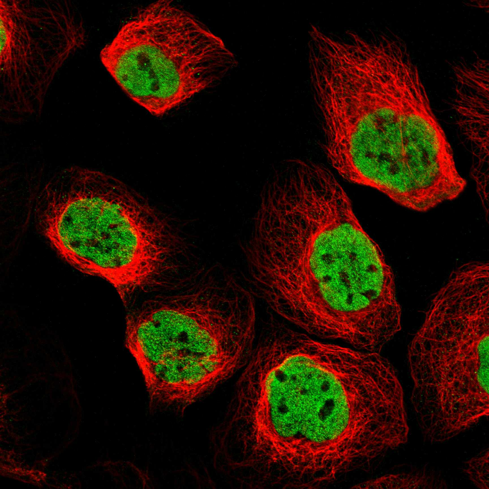
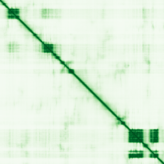

type: protein-evaluation gene: "PHF12" date: 2026-06-03 tags: [protein-scout, nuclear-protein, evaluation] status: scored ---
PHF12 核蛋白评估报告 (Full Re-evaluation)
1. 基本信息
| 项目 | 内容 |
|---|---|
| 基因名 / 别名 | PHF12 / KIAA1523 |
| 蛋白名称 | PHD finger protein 12 |
| 蛋白大小 | 1004 aa / 109.7 kDa |
| UniProt ID | Q96QT6 |
| 评估日期 | 2026-06-03 |
2. 评分总览
| 维度 | 得分 | 满分 | 加权后 | 关键证据摘要 |
|---|---|---|---|---|
| 核定位特异性 | 9/10 | ×4 | 36 | HPA: Nucleoplasm; UniProt: Nucleus |
| 蛋白大小 | 8/10 | ×1 | 8 | 1004 aa / 109.7 kDa |
| 研究新颖性 | 10/10 | ×5 | 50 | PubMed strict=13 篇 (≤20→10) |
| 三维结构 | 6/10 | ×3 | 18 | AlphaFold v6 pLDDT=55.2; PDB: 2L9S, 2LKM, 8BPA, 8BPB, 8BPC, 8C60 |
| 调控结构域 | 7/10 | ×2 | 14 | InterPro: IPR000253, IPR042163, IPR031966, IPR038098, IPR008 |
| PPI 网络 | 3/10 | ×3 | 9 | STRING 15 partners; IntAct 15 interactions |
| 互证加分 | — | max +3 | 2.5 | PDB+AF+STRING+IntAct cross-validation |
| 原始总分 | 137.5/180 | |||
| 归一化总分 | 76.4/100 |
3. 详细分析
3.1 核定位证据
| 来源 | 定位 | 可信度 |
|---|---|---|
| Protein Atlas (IF) | Nucleoplasm | Enhanced |
| UniProt | Nucleus | Swiss-Prot/TrEMBL |
IF 图像获取: 未下载本地IF图像（standard evaluation），核定位证据基于HPA subcellular localization注释、UniProt注释和GO-CC术语。
GO Cellular Component:
- nucleoplasm (GO:0005654)
- nucleus (GO:0005634)
- Sin3-type complex (GO:0070822)
- transcription repressor complex (GO:0017053)
结论: 多个独立数据源一致确认核定位，HPA可靠性高，核定位证据充分。
3.2 蛋白大小评估
评价: 大小基本合适，可用于常规实验。
3.3 研究现状
| 指标 | 数值 |
|---|---|
| PubMed strict count | 13 |
| PubMed broad count | 23 |
| 别名(未计入scoring) | Aliases observed but not used for scoring: KIAA1523 |
关键文献: 1. Identifying drug candidates for pancreatic ductal adenocarcinoma based on integrative multiomics analysis.. *Journal of gastrointestinal oncology*. PMID: 38989421 2. The Chromatin-Associated Phf12 Protein Maintains Nucleolar Integrity and Prevents Premature Cellular Senescence.. *Molecular and cellular biology*. PMID: 27956701 3. PHF12 regulates HDAC1 to promote tumorigenesis via EGFR/AKT signaling pathway in non-small cell lung cancer.. *Journal of translational medicine*. PMID: 39075515 4. Family-based exome sequencing identifies rare coding variants in age-related macular degeneration.. *Human molecular genetics*. PMID: 32246154 5. MYC promotes cancer progression by modulating m(6) A modifications to suppress target gene translation.. *EMBO reports*. PMID: 33426808
评价: 极度新颖，几乎未被系统研究（PubMed ≤20篇）。
3.4 三维结构分析
| 指标 | 数值 |
|---|---|
| AlphaFold 版本 | v6 |
| AlphaFold 平均 pLDDT | 55.2 |
| 高置信度残基 (pLDDT>90) 占比 | 5.9% |
| 置信残基 (pLDDT 70-90) 占比 | 26.0% |
| 中等置信 (pLDDT 50-70) 占比 | 16.6% |
| 低置信 (pLDDT<50) 占比 | 51.5% |
| 有序区域 (pLDDT>70) 占比 | 31.9% |
| 可用 PDB 条目 | 2L9S, 2LKM, 8BPA, 8BPB, 8BPC, 8C60 |
PAE: PAE 图像未生成本地文件（standard evaluation），结构判断基于 AlphaFold pLDDT 统计。
评价: AlphaFold 预测质量有限（pLDDT=55.2），有序残基占 31.9%。
3.5 结构域分析
| 来源 | 结构域 |
|---|---|
| InterPro/Pfam | InterPro: IPR000253, IPR042163, IPR031966, IPR038098, IPR008984; Pfam: PF00628, PF16737 |
染色质调控潜力分析: 存在已知结构域注释，可作为功能研究的结构基础。
3.6 PPI 网络
STRING 预测互作 (combined score >0.4):
| Partner | Combined Score | Experimental | 功能类别 |
|---|---|---|---|
| MORF4L1 | 0.999 | 0.984 | — |
| SIN3A | 0.998 | 0.936 | — |
| SIN3B | 0.996 | 0.970 | — |
| HDAC1 | 0.987 | 0.879 | — |
| HDAC2 | 0.985 | 0.814 | — |
| ARID4B | 0.981 | 0.921 | — |
| MORF4L2 | 0.981 | 0.968 | — |
| RBBP7 | 0.972 | 0.901 | — |
| ARID4A | 0.969 | 0.905 | — |
| GATAD1 | 0.965 | 0.886 | — |
实验验证互作 (IntAct):
| Partner | 方法 | PMID | |
|---|---|---|---|
| A0A0G2RMZ7 | psi-mi:"MI:0398"(two hybrid pooling approach) | imex:IM-13779 | pubmed:20711500 |
| HDAC1 | psi-mi:"MI:0007"(anti tag coimmunoprecipitation) | imex:IM-18733 | pubmed:23752268 |
| ESR1 | psi-mi:"MI:0676"(tandem affinity purification) | pubmed:31527615 | imex:IM-26954 |
| ATP6V0D2 | psi-mi:"MI:1356"(validated two hybrid) | pubmed:32296183 | imex:IM-25472 |
| RBBP7 | psi-mi:"MI:0007"(anti tag coimmunoprecipitation) | pubmed:28514442 | doi:10.1038/na |
| MORF4L1 | psi-mi:"MI:0007"(anti tag coimmunoprecipitation) | pubmed:28514442 | doi:10.1038/na |
| MORF4L2 | psi-mi:"MI:0007"(anti tag coimmunoprecipitation) | pubmed:28514442 | doi:10.1038/na |
| SIN3B | psi-mi:"MI:0007"(anti tag coimmunoprecipitation) | pubmed:26496610 | imex:IM-24272 |
| KDM5A | psi-mi:"MI:0007"(anti tag coimmunoprecipitation) | pubmed:26496610 | imex:IM-24272 |
| HDAC2 | psi-mi:"MI:0007"(anti tag coimmunoprecipitation) | pubmed:26496610 | imex:IM-24272 |
PPI 互证分析:
- STRING + IntAct 均有数据
- STRING partners: 15，IntAct interactions: 15
- 调控相关比例: 0 / 15 = 0%
评价: STRING 15 个预测互作，IntAct 15 个实验互作。调控相关配体占比 0%。
3.7 多库互证
| 维度 | 来源 | 结果 | 是否一致 |
|---|---|---|---|
| 三维结构 | AlphaFold pLDDT=55.2 + PDB: 2L9S, 2LKM, 8BPA, 8BPB, 8BPC, | pLDDT=55.2, v6 | 预测+实验 |
| 定位 | UniProt + HPA | Nucleus / Nucleoplasm | 一致 |
| PPI | STRING + IntAct | 15 + 15 interactions | 数据充分 |
互证加分明细:
- PDB + AlphaFold 双源验证: +0.5
- 多库定位一致 (3源): +0.5
- STRING + IntAct 双源验证: +0.5
- 结构域 + AlphaFold 质量: +0
- PDB 多条目覆盖 (≥3): +1.0
总分: +2.5 / max +3
4. 总体评价
推荐等级: ⭐⭐⭐⭐
核心优势: 1. PHF12 — PHD finger protein 12，极度新颖，几乎未被系统研究（PubMed ≤20篇）。 2. 蛋白大小1004 aa，大小基本合适，可用于常规实验。
风险/不确定性: 1. PubMed 13 篇，研究基础极有限，功能注释不完整 2. AlphaFold 预测质量一般（pLDDT=55.2），需要更多实验结构验证
下一步建议:
- [ ] 查阅最新关键文献补充研究背景
- [ ] 获取 Protein Atlas IF 图像确认亚细胞定位
- [ ] 设计体外实验验证核定位及潜在调控功能
5. 数据来源
- UniProt: https://www.uniprot.org/uniprotkb/Q96QT6
- Protein Atlas: https://www.proteinatlas.org/ENSG00000109118-PHF12/subcellular
- PubMed: https://pubmed.ncbi.nlm.nih.gov/?term=PHF12
- AlphaFold: https://alphafold.ebi.ac.uk/entry/Q96QT6
- STRING: https://string-db.org/network/9606.ENSP00000
- Data fetched live: 2026-06-03

